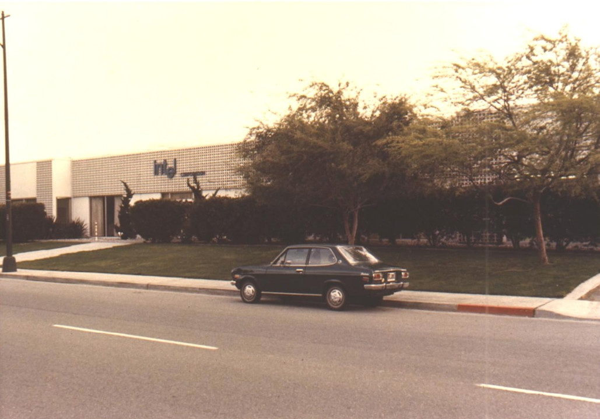

1968
Intel Founded
Robert Noyce and Gordon Moore rename NM Electronics to Intel Corporation, laying the foundation for decades of innovation.
Explore Intel’s journey toward a more sustainable future.
Scroll or swipe to view timeline | Hover or focus on tiles to learn more!
Intel’s sustainability initiatives drive positive change worldwide, advancing technology for a better planet.
Learn MoreWe reduce waste and reuse resources, supporting a circular economy for a greener, more sustainable future.
Learn MoreIntel invests in renewable energy and energy-efficient technologies to power progress sustainably.
Learn More